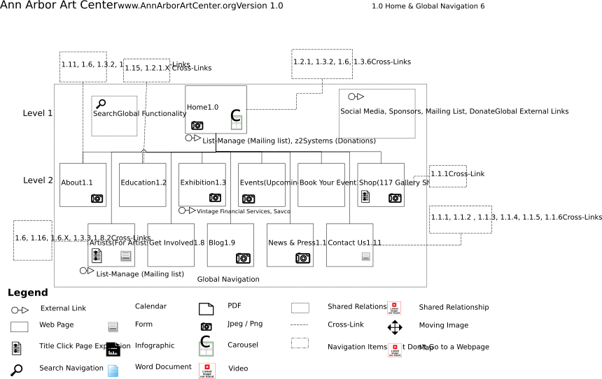
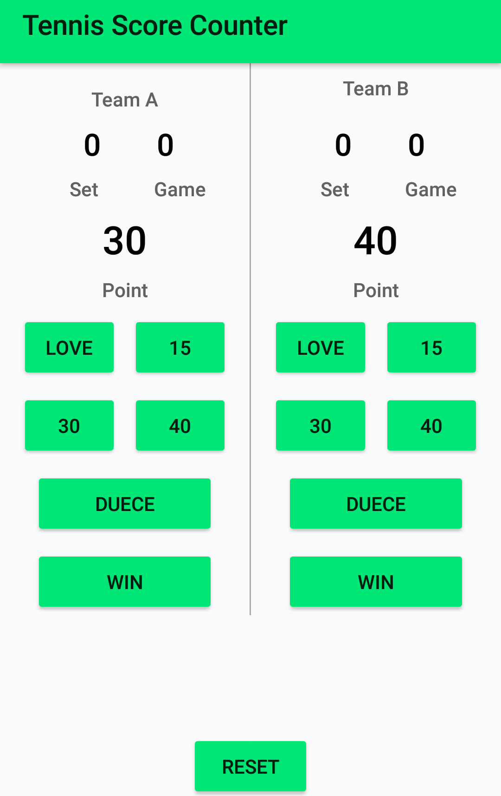
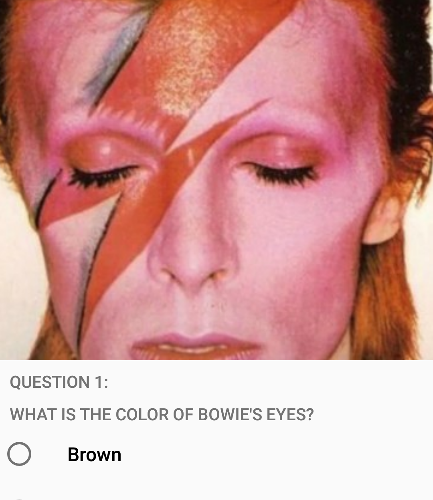
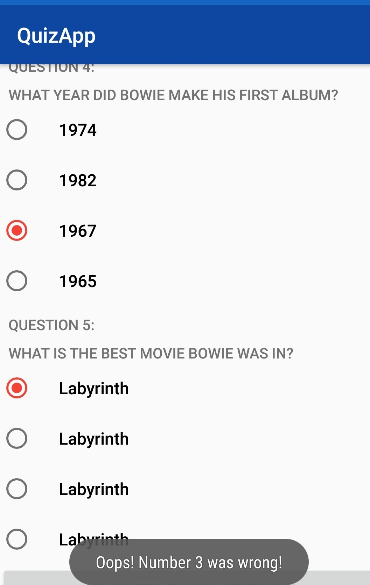

Wireframe Page Deconstruction

Challenges:
Creating an information hierachy when the site was abundant with cross linked pages and abandoned pages.
Notating every aspect of the website. The website was full of off linked sites and many media types.
Learning Opportunities:
Needing to make an information hiearchy to be able to fully map the page.
Mapping the current site provided insight to better executed user experience.
Tools Used:
Visio
Illustrator
Android App Building (Recipient of Google Scholarship)



Challenges:
Learning a new IDE - Android Studio.
Time management to build apps while going to school full time.
Learning online and not being able to meet with someone to teach programming aspects.
Learning Opportunities:
Learn Google best practices.
Resolve technical issues through online research and databases.
Java / XML pest practices
Skills:
Programming Researcher
Design Practices